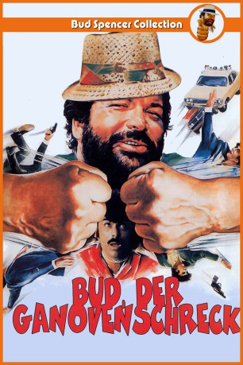

#4378 Bud, der Ganovenschreck
Alternativ: Cat and Dog (Englischer Titel)
 
 IMDB-Wertung: 5.7 / 10
IMDB-Wertung: 5.7 / 10  Metascore: 0
Metascore: 0 
Sergeant Buddy arbeitet in einer Spezialeinheit der Kripo in Miami. Sein richtiger Name ist Alan Parker, aber seine Kollegen nennen ihn alle Buddy. Seit längerem ist er auf den Versen von Tony Roma, einem windigen Gigolo und Dieb, der sich darauf spezialisiert hat, ältere Damen auszurauben. Eines Tages treibt es der Ganove auf die Spitze und raubt die Juwelen der Frau eines Senators. Doch daraufhin lernen Buddy und Tony sich kennen und werden mit der Zeit sogar vertraute Freunde. Buddy profitiert aus den nützlichen Infos, die Tony ihm aus dem Milieu liefern kann, wo er sich bestens auskennt. Sie bilden letztendlich eine schlagkräftige Allianz und kämpfen fortan gemeinsam gegen eine mächtige Mafia-Bande. Doch werden die vier Fäuste genügen, um die Kriminellen dingfest zu machen?
Jahr: 1983
Dauer: 100 Minuten
FSK: 6
Land: Studio: DFWTonspuren:
Untertitel:
Auflösung: 1080p (1920x1080) Größe: 8314 MB
Genre: Komödie, Krimi
Regisseur: Bruno Corbucci
Drehbuch: Reinhard Klooss
Soundtrack:
Darsteller:
 Bud Spencer als Lt. Alan Parker
Bud Spencer als Lt. Alan Parker Tomas Milian als Tony Roma
Tomas Milian als Tony Roma Marc Lawrence als Don Salvatore Licuti
Marc Lawrence als Don Salvatore Licuti- Darcy Shean als Pamela
 Dan Fitzgerald als Senator Edward Anderson
Dan Fitzgerald als Senator Edward Anderson Jay Amor als Don Salvatore Henchman , uncredited
Jay Amor als Don Salvatore Henchman , uncredited- Raymond Forchion als Uomo arrabiato , uncredited
- Margherita Fumero als Deborah Smith
- Don Sebastian als Captain Browning
- Billy Garrigues als Sergeant Hayk
- Joan Call als Annunziata Pipino
- Christine Troples als Marion
- Robbie Young als
- Giancarlo Bastianoni als Don Salvatore Henchman , uncredited
- Harold Bergman als Priest , uncredited
- Richard Liberty als Policeman , uncredited
 Emilio Messina als Don Salvatore Henchman , uncredited
Emilio Messina als Don Salvatore Henchman , uncredited- Roberto Messina als Don Salvatore Henchman , uncredited
- Jeff Moldovan als Puncher , uncredited
- Joan Murphy als Virginia Anderson , uncredited
- Giuseppe Pedersoli als Hotel Worker , uncredited
- Cristina Trotter als Mme. Haig , uncredited
- Bill Wohrman als Burbank, Bouncer , uncredited
Datei: X:\Person\Bud Spencer + Terence Hill\Bud, der Ganovenschreck (1983, FSK6, 1920x1080).mkv seit 13.09.2016
Festplatte: HD Collection-7+mehr(A-Z)+Person
 Es gibt insgesamt 43 Filme in der Gruppe 'Person\Bud Spencer + Terence Hill'
Es gibt insgesamt 43 Filme in der Gruppe 'Person\Bud Spencer + Terence Hill'